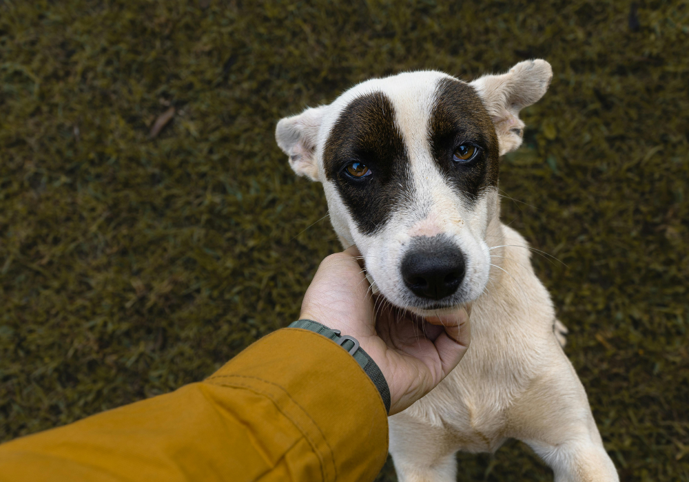
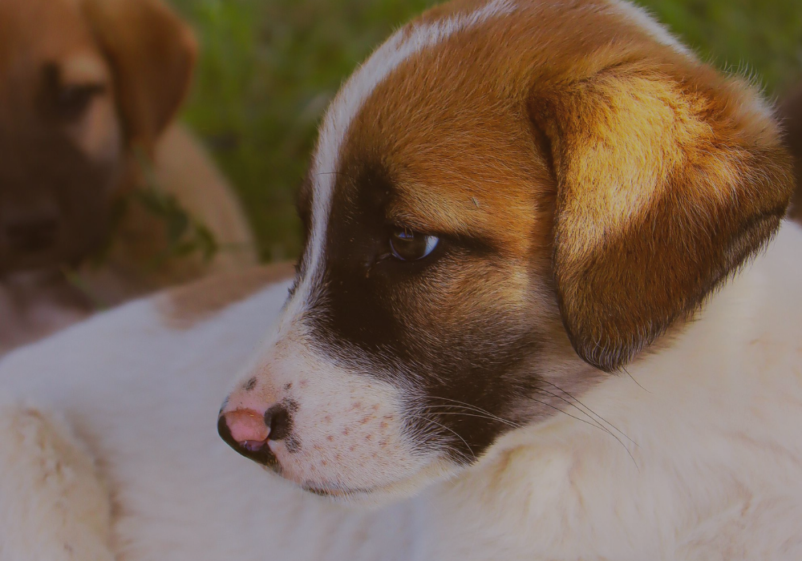

Todo cão merece um lar. Todo lar merece um Aumigo.
Veja alguns AUmigos!
Hannah - 7 Anos
Uma senhora carinhosa e calma, perfeita para quem busca uma companhia tranquila e leal. Hannah adora um colo, um carinho e caminhadas leves. Ela só quer amor e paz no seu cantinho.

pedrinho - 3 Anos
Cheio de energia e alegria, Pedrinho é aquele amigo fiel que vai encher seus dias de sorrisos. Ideal para famílias ativas ou pessoas que amam uma boa brincadeira!
Tiofilo - 2 meses
Um filhotinho doce, curioso e cheio de vida! Tiofilo está descobrindo o mundo e precisa de um tutor responsável para acompanhá-lo com muito carinho nessa jornada.
Edimara - 5 meses
Esperta, brincalhona e com aquele jeitinho carismático que derrete qualquer coração. Edimara está pronta para aprender e ser sua nova melhor amiga!

Julinha - 1 mês
Dócil, companheira e super educada. Bisteca é aquela cachorrinha que adora um carinho no sofá e uma boa soneca ao seu lado. Ideal para quem busca uma amiga tranquila, mas cheia de amor pra dar!
Zuzu - 1 anos
Curioso, brincalhão e cheio de energia! Zulu é perfeito para famílias ativas ou pessoas que amam passeios e aventuras. Está pronto para aprender truques e ser o seu parceiro inseparável!